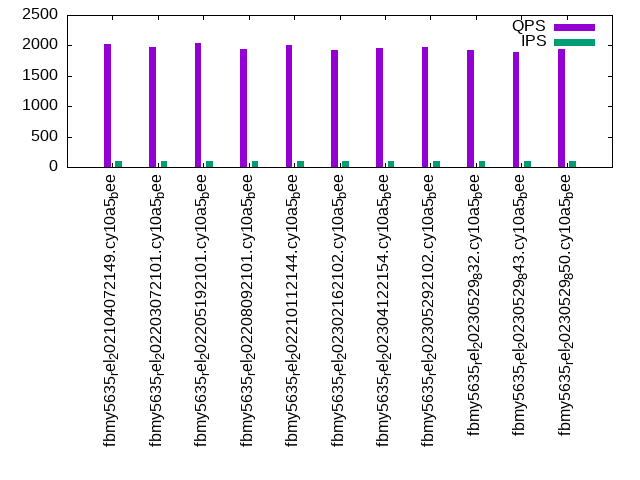

This is a report for the insert benchmark with 800M docs and 1 client(s). It is generated by scripts (bash, awk, sed) and Tufte might not be impressed. An overview of the insert benchmark is here and a short update is here. Below, by DBMS, I mean DBMS+version.config. An example is my8020.c10b40 where my means MySQL, 8020 is version 8.0.20 and c10b40 is the name for the configuration file.
The test server has 8 AMD cores, 16G RAM and an NVMe SSD. It is described here as the Beelink. The benchmark was run with 1 client and there were 1 or 3 connections per client (1 for queries or inserts without rate limits, 1+1 for rate limited inserts+deletes). It uses 1 table. It loads 800M rows per table without secondary indexes, creates secondary indexes, then inserts 100M rows per table with a delete per insert to avoid growing the table. It then does 3 read+write tests for 3600s each that do queries as fast as possible with 100, 500 and then 1000 inserts/second/client concurrent with the queries and 1000 deletes/second to avoid growing the table. The database is larger than RAM. Clients and the DBMS share one server. The per-database configs are in the per-database subdirectories here.
The tested DBMS are:
The numbers are inserts/s for l.i0 and l.i1, indexed docs (or rows) /s for l.x and queries/s for q*.2. The values are the average rate over the entire test for inserts (IPS) and queries (QPS). The range of values for IPS and QPS is split into 3 parts: bottom 25%, middle 50%, top 25%. Values in the bottom 25% have a red background, values in the top 25% have a green background and values in the middle have no color. A gray background is used for values that can be ignored because the DBMS did not sustain the target insert rate. Red backgrounds are not used when the minimum value is within 80% of the max value.
| dbms | l.i0 | l.x | l.i1 | q100.1 | q500.1 | q1000.1 |
|---|---|---|---|---|---|---|
| fbmy5635_rel_202104072149.cy10a5_bee | 81086 | 76019 | 26745 | 2028 | 2048 | 2044 |
| fbmy5635_rel_202203072101.cy10a5_bee | 79499 | 76026 | 26233 | 1979 | 2001 | 2043 |
| fbmy5635_rel_202205192101.cy10a5_bee | 76716 | 75481 | 25753 | 2038 | 2019 | 2026 |
| fbmy5635_rel_202208092101.cy10a5_bee | 77250 | 75212 | 25840 | 1949 | 1984 | 1985 |
| fbmy5635_rel_202210112144.cy10a5_bee | 76967 | 75753 | 25773 | 2002 | 2024 | 2051 |
| fbmy5635_rel_202302162102.cy10a5_bee | 76908 | 75417 | 25588 | 1930 | 1940 | 1972 |
| fbmy5635_rel_202304122154.cy10a5_bee | 77265 | 75738 | 25562 | 1956 | 1922 | 1984 |
| fbmy5635_rel_202305292102.cy10a5_bee | 75944 | 75860 | 25381 | 1972 | 1997 | 1987 |
| fbmy5635_rel_20230529_832.cy10a5_bee | 76307 | 76004 | 25107 | 1926 | 1914 | 1951 |
| fbmy5635_rel_20230529_843.cy10a5_bee | 76621 | 75467 | 25813 | 1888 | 1933 | 1919 |
| fbmy5635_rel_20230529_850.cy10a5_bee | 76067 | 76004 | 26076 | 1944 | 1940 | 1957 |
This table has relative throughput, throughput for the DBMS relative to the DBMS in the first line, using the absolute throughput from the previous table. Values less than 0.95 have a yellow background. Values greater than 1.05 have a blue background.
| dbms | l.i0 | l.x | l.i1 | q100.1 | q500.1 | q1000.1 |
|---|---|---|---|---|---|---|
| fbmy5635_rel_202104072149.cy10a5_bee | 1.00 | 1.00 | 1.00 | 1.00 | 1.00 | 1.00 |
| fbmy5635_rel_202203072101.cy10a5_bee | 0.98 | 1.00 | 0.98 | 0.98 | 0.98 | 1.00 |
| fbmy5635_rel_202205192101.cy10a5_bee | 0.95 | 0.99 | 0.96 | 1.00 | 0.99 | 0.99 |
| fbmy5635_rel_202208092101.cy10a5_bee | 0.95 | 0.99 | 0.97 | 0.96 | 0.97 | 0.97 |
| fbmy5635_rel_202210112144.cy10a5_bee | 0.95 | 1.00 | 0.96 | 0.99 | 0.99 | 1.00 |
| fbmy5635_rel_202302162102.cy10a5_bee | 0.95 | 0.99 | 0.96 | 0.95 | 0.95 | 0.96 |
| fbmy5635_rel_202304122154.cy10a5_bee | 0.95 | 1.00 | 0.96 | 0.96 | 0.94 | 0.97 |
| fbmy5635_rel_202305292102.cy10a5_bee | 0.94 | 1.00 | 0.95 | 0.97 | 0.98 | 0.97 |
| fbmy5635_rel_20230529_832.cy10a5_bee | 0.94 | 1.00 | 0.94 | 0.95 | 0.93 | 0.95 |
| fbmy5635_rel_20230529_843.cy10a5_bee | 0.94 | 0.99 | 0.97 | 0.93 | 0.94 | 0.94 |
| fbmy5635_rel_20230529_850.cy10a5_bee | 0.94 | 1.00 | 0.97 | 0.96 | 0.95 | 0.96 |
This lists the average rate of inserts/s for the tests that do inserts concurrent with queries. For such tests the query rate is listed in the table above. The read+write tests are setup so that the insert rate should match the target rate every second. Cells that are not at least 95% of the target have a red background to indicate a failure to satisfy the target.
| dbms | q100.1 | q500.1 | q1000.1 |
|---|---|---|---|
| fbmy5635_rel_202104072149.cy10a5_bee | 100 | 499 | 999 |
| fbmy5635_rel_202203072101.cy10a5_bee | 100 | 499 | 998 |
| fbmy5635_rel_202205192101.cy10a5_bee | 100 | 499 | 999 |
| fbmy5635_rel_202208092101.cy10a5_bee | 100 | 499 | 999 |
| fbmy5635_rel_202210112144.cy10a5_bee | 100 | 499 | 998 |
| fbmy5635_rel_202302162102.cy10a5_bee | 100 | 499 | 998 |
| fbmy5635_rel_202304122154.cy10a5_bee | 100 | 499 | 999 |
| fbmy5635_rel_202305292102.cy10a5_bee | 100 | 499 | 998 |
| fbmy5635_rel_20230529_832.cy10a5_bee | 100 | 499 | 998 |
| fbmy5635_rel_20230529_843.cy10a5_bee | 100 | 499 | 998 |
| fbmy5635_rel_20230529_850.cy10a5_bee | 100 | 499 | 999 |
| target | 100 | 500 | 1000 |
l.i0: load without secondary indexes. Graphs for performance per 1-second interval are here.
Average throughput:
Insert response time histogram: each cell has the percentage of responses that take <= the time in the header and max is the max response time in seconds. For the max column values in the top 25% of the range have a red background and in the bottom 25% of the range have a green background. The red background is not used when the min value is within 80% of the max value.
| dbms | 256us | 1ms | 4ms | 16ms | 64ms | 256ms | 1s | 4s | 16s | gt | max |
|---|---|---|---|---|---|---|---|---|---|---|---|
| fbmy5635_rel_202104072149.cy10a5_bee | nonzero | 99.873 | 0.123 | 0.002 | 0.002 | 0.123 | |||||
| fbmy5635_rel_202203072101.cy10a5_bee | 99.871 | 0.125 | 0.003 | 0.001 | 0.118 | ||||||
| fbmy5635_rel_202205192101.cy10a5_bee | 99.867 | 0.129 | 0.003 | 0.001 | 0.098 | ||||||
| fbmy5635_rel_202208092101.cy10a5_bee | 99.867 | 0.129 | 0.002 | 0.002 | 0.133 | ||||||
| fbmy5635_rel_202210112144.cy10a5_bee | 99.867 | 0.129 | 0.002 | 0.002 | 0.099 | ||||||
| fbmy5635_rel_202302162102.cy10a5_bee | 99.867 | 0.129 | 0.003 | 0.001 | 0.115 | ||||||
| fbmy5635_rel_202304122154.cy10a5_bee | 99.868 | 0.128 | 0.003 | 0.001 | 0.091 | ||||||
| fbmy5635_rel_202305292102.cy10a5_bee | 99.865 | 0.131 | 0.003 | 0.001 | 0.089 | ||||||
| fbmy5635_rel_20230529_832.cy10a5_bee | 99.866 | 0.130 | 0.003 | 0.001 | 0.091 | ||||||
| fbmy5635_rel_20230529_843.cy10a5_bee | 99.866 | 0.130 | 0.003 | 0.001 | 0.120 | ||||||
| fbmy5635_rel_20230529_850.cy10a5_bee | 99.865 | 0.130 | 0.003 | 0.001 | 0.097 |
Performance metrics for the DBMS listed above. Some are normalized by throughput, others are not. Legend for results is here.
ips qps rps rmbps wps wmbps rpq rkbpq wpi wkbpi csps cpups cspq cpupq dbgb1 dbgb2 rss maxop p50 p99 tag 81086 0 0 0.0 43.8 14.6 0.000 0.000 0.001 0.184 8054 23.3 0.099 23 25.1 26.7 1.6 0.123 81406 73348 800m.fbmy5635_rel_202104072149.cy10a5_bee 79499 0 0 0.0 43.1 14.3 0.000 0.000 0.001 0.184 7888 23.0 0.099 23 25.1 25.7 1.5 0.118 79753 72717 800m.fbmy5635_rel_202203072101.cy10a5_bee 76716 0 0 0.0 41.4 13.8 0.000 0.000 0.001 0.184 7610 21.9 0.099 23 25.1 25.7 1.5 0.098 76912 70819 800m.fbmy5635_rel_202205192101.cy10a5_bee 77250 0 0 0.0 43.7 13.9 0.000 0.000 0.001 0.184 7685 22.4 0.099 23 25.1 25.7 1.5 0.133 77512 70722 800m.fbmy5635_rel_202208092101.cy10a5_bee 76967 0 0 0.0 43.5 13.8 0.000 0.000 0.001 0.184 7650 22.0 0.099 23 25.1 25.7 1.5 0.099 77212 70322 800m.fbmy5635_rel_202210112144.cy10a5_bee 76908 0 0 0.0 41.7 13.8 0.000 0.000 0.001 0.184 7624 22.3 0.099 23 25.1 25.7 1.5 0.115 77112 70921 800m.fbmy5635_rel_202302162102.cy10a5_bee 77265 0 0 0.0 42.0 13.9 0.000 0.000 0.001 0.184 7665 22.3 0.099 23 25.1 25.7 1.5 0.091 77512 71312 800m.fbmy5635_rel_202304122154.cy10a5_bee 75944 0 0 0.0 41.2 13.7 0.000 0.000 0.001 0.184 7546 21.3 0.099 22 25.1 25.7 1.5 0.089 76110 69922 800m.fbmy5635_rel_202305292102.cy10a5_bee 76307 0 0 0.0 41.5 13.7 0.000 0.000 0.001 0.184 7571 21.6 0.099 23 25.1 25.7 1.5 0.091 76511 70320 800m.fbmy5635_rel_20230529_832.cy10a5_bee 76621 0 0 0.0 41.5 13.8 0.000 0.000 0.001 0.184 7610 22.1 0.099 23 25.1 25.7 1.5 0.120 76812 70520 800m.fbmy5635_rel_20230529_843.cy10a5_bee 76067 0 0 0.0 41.3 13.7 0.000 0.000 0.001 0.184 7553 21.7 0.099 23 25.1 25.7 1.5 0.097 76212 69953 800m.fbmy5635_rel_20230529_850.cy10a5_bee
l.x: create secondary indexes.
Average throughput:
Performance metrics for the DBMS listed above. Some are normalized by throughput, others are not. Legend for results is here.
ips qps rps rmbps wps wmbps rpq rkbpq wpi wkbpi csps cpups cspq cpupq dbgb1 dbgb2 rss maxop p50 p99 tag 76019 0 102 15.9 31.1 11.1 0.001 0.214 0.000 0.149 297 11.7 0.004 12 51.0 52.6 8.8 0.007 NA NA 800m.fbmy5635_rel_202104072149.cy10a5_bee 76026 0 101 15.9 31.4 11.1 0.001 0.214 0.000 0.150 296 11.7 0.004 12 51.1 51.7 8.8 0.008 NA NA 800m.fbmy5635_rel_202203072101.cy10a5_bee 75481 0 100 15.8 30.3 11.0 0.001 0.214 0.000 0.150 295 11.7 0.004 12 51.0 51.7 8.8 0.006 NA NA 800m.fbmy5635_rel_202205192101.cy10a5_bee 75212 0 100 15.7 32.5 11.0 0.001 0.214 0.000 0.150 339 11.7 0.005 12 51.1 51.7 8.8 0.008 NA NA 800m.fbmy5635_rel_202208092101.cy10a5_bee 75753 0 101 15.8 33.6 11.1 0.001 0.214 0.000 0.150 345 11.7 0.005 12 51.0 51.7 8.8 0.007 NA NA 800m.fbmy5635_rel_202210112144.cy10a5_bee 75417 0 100 15.8 31.4 11.0 0.001 0.214 0.000 0.150 290 11.7 0.004 12 51.0 51.7 8.8 0.007 NA NA 800m.fbmy5635_rel_202302162102.cy10a5_bee 75738 0 101 15.8 30.0 11.1 0.001 0.214 0.000 0.149 305 11.7 0.004 12 51.0 51.7 8.8 0.008 NA NA 800m.fbmy5635_rel_202304122154.cy10a5_bee 75860 0 101 15.9 30.1 11.1 0.001 0.214 0.000 0.149 298 11.7 0.004 12 51.0 51.7 8.8 0.009 NA NA 800m.fbmy5635_rel_202305292102.cy10a5_bee 76004 0 101 15.9 31.0 11.1 0.001 0.214 0.000 0.150 293 11.7 0.004 12 51.0 51.7 8.8 0.007 NA NA 800m.fbmy5635_rel_20230529_832.cy10a5_bee 75467 0 100 15.8 30.1 11.0 0.001 0.214 0.000 0.150 299 11.7 0.004 12 51.0 51.7 8.8 0.010 NA NA 800m.fbmy5635_rel_20230529_843.cy10a5_bee 76004 0 101 15.9 30.2 11.1 0.001 0.214 0.000 0.150 298 11.7 0.004 12 51.0 51.7 8.8 0.006 NA NA 800m.fbmy5635_rel_20230529_850.cy10a5_bee
l.i1: continue load after secondary indexes created. Graphs for performance per 1-second interval are here.
Average throughput:
Insert response time histogram: each cell has the percentage of responses that take <= the time in the header and max is the max response time in seconds. For the max column values in the top 25% of the range have a red background and in the bottom 25% of the range have a green background. The red background is not used when the min value is within 80% of the max value.
| dbms | 256us | 1ms | 4ms | 16ms | 64ms | 256ms | 1s | 4s | 16s | gt | max |
|---|---|---|---|---|---|---|---|---|---|---|---|
| fbmy5635_rel_202104072149.cy10a5_bee | 99.771 | 0.222 | 0.006 | 0.002 | 0.099 | ||||||
| fbmy5635_rel_202203072101.cy10a5_bee | 99.778 | 0.215 | 0.005 | 0.002 | 0.108 | ||||||
| fbmy5635_rel_202205192101.cy10a5_bee | 99.766 | 0.226 | 0.006 | 0.002 | 0.125 | ||||||
| fbmy5635_rel_202208092101.cy10a5_bee | 99.769 | 0.225 | 0.003 | 0.003 | 0.154 | ||||||
| fbmy5635_rel_202210112144.cy10a5_bee | 99.770 | 0.222 | 0.004 | 0.003 | 0.134 | ||||||
| fbmy5635_rel_202302162102.cy10a5_bee | 99.784 | 0.210 | 0.005 | 0.001 | 0.113 | ||||||
| fbmy5635_rel_202304122154.cy10a5_bee | 99.771 | 0.223 | 0.005 | 0.002 | 0.141 | ||||||
| fbmy5635_rel_202305292102.cy10a5_bee | 99.779 | 0.215 | 0.005 | 0.002 | 0.102 | ||||||
| fbmy5635_rel_20230529_832.cy10a5_bee | 99.777 | 0.217 | 0.004 | 0.002 | 0.131 | ||||||
| fbmy5635_rel_20230529_843.cy10a5_bee | 99.764 | 0.229 | 0.005 | 0.002 | 0.118 | ||||||
| fbmy5635_rel_20230529_850.cy10a5_bee | 99.777 | 0.217 | 0.005 | 0.002 | 0.114 |
Delete response time histogram: each cell has the percentage of responses that take <= the time in the header and max is the max response time in seconds. For the max column values in the top 25% of the range have a red background and in the bottom 25% of the range have a green background. The red background is not used when the min value is within 80% of the max value.
| dbms | 256us | 1ms | 4ms | 16ms | 64ms | 256ms | 1s | 4s | 16s | gt | max |
|---|---|---|---|---|---|---|---|---|---|---|---|
| fbmy5635_rel_202104072149.cy10a5_bee | 99.708 | 0.279 | 0.012 | 0.002 | 0.100 | ||||||
| fbmy5635_rel_202203072101.cy10a5_bee | 99.686 | 0.301 | 0.011 | 0.002 | 0.108 | ||||||
| fbmy5635_rel_202205192101.cy10a5_bee | 99.688 | 0.298 | 0.012 | 0.002 | 0.125 | ||||||
| fbmy5635_rel_202208092101.cy10a5_bee | 99.700 | 0.288 | 0.009 | 0.003 | 0.153 | ||||||
| fbmy5635_rel_202210112144.cy10a5_bee | 99.693 | 0.294 | 0.010 | 0.003 | 0.134 | ||||||
| fbmy5635_rel_202302162102.cy10a5_bee | 99.712 | 0.278 | 0.008 | 0.002 | 0.113 | ||||||
| fbmy5635_rel_202304122154.cy10a5_bee | 99.721 | 0.269 | 0.009 | 0.002 | 0.140 | ||||||
| fbmy5635_rel_202305292102.cy10a5_bee | 99.712 | 0.278 | 0.008 | 0.002 | 0.102 | ||||||
| fbmy5635_rel_20230529_832.cy10a5_bee | 99.707 | 0.283 | 0.008 | 0.002 | 0.130 | ||||||
| fbmy5635_rel_20230529_843.cy10a5_bee | 99.703 | 0.287 | 0.009 | 0.002 | 0.118 | ||||||
| fbmy5635_rel_20230529_850.cy10a5_bee | 99.707 | 0.282 | 0.009 | 0.001 | 0.114 |
Performance metrics for the DBMS listed above. Some are normalized by throughput, others are not. Legend for results is here.
ips qps rps rmbps wps wmbps rpq rkbpq wpi wkbpi csps cpups cspq cpupq dbgb1 dbgb2 rss maxop p50 p99 tag 26745 0 418 31.1 201.0 75.2 0.016 1.189 0.008 2.877 11820 55.4 0.442 166 58.6 59.9 8.6 0.099 26770 23473 800m.fbmy5635_rel_202104072149.cy10a5_bee 26233 0 431 33.3 200.4 76.1 0.016 1.298 0.008 2.972 11591 55.8 0.442 170 58.0 58.0 8.6 0.108 26220 23023 800m.fbmy5635_rel_202203072101.cy10a5_bee 25753 0 416 31.8 195.1 73.8 0.016 1.264 0.008 2.934 11447 55.2 0.445 171 57.7 57.7 8.6 0.125 25771 22475 800m.fbmy5635_rel_202205192101.cy10a5_bee 25840 0 412 31.3 197.8 74.1 0.016 1.239 0.008 2.936 11485 55.1 0.444 171 57.8 57.9 8.6 0.154 25870 22575 800m.fbmy5635_rel_202208092101.cy10a5_bee 25773 0 435 34.0 199.8 74.8 0.017 1.352 0.008 2.974 11472 55.5 0.445 172 57.7 57.7 8.7 0.134 25821 22525 800m.fbmy5635_rel_202210112144.cy10a5_bee 25588 0 368 25.8 161.4 61.0 0.014 1.031 0.006 2.440 11450 52.8 0.447 165 57.7 57.7 8.6 0.113 25671 22025 800m.fbmy5635_rel_202302162102.cy10a5_bee 25562 0 374 26.5 161.0 60.6 0.015 1.060 0.006 2.428 11421 52.6 0.447 165 57.8 57.8 8.6 0.141 25570 21926 800m.fbmy5635_rel_202304122154.cy10a5_bee 25381 0 378 27.0 159.9 60.3 0.015 1.091 0.006 2.434 11340 52.9 0.447 167 57.1 57.1 8.6 0.102 25422 21676 800m.fbmy5635_rel_202305292102.cy10a5_bee 25107 0 362 25.3 160.0 59.9 0.014 1.030 0.006 2.442 11104 53.5 0.442 170 58.3 58.3 8.6 0.131 25072 21526 800m.fbmy5635_rel_20230529_832.cy10a5_bee 25813 0 338 22.0 173.8 64.8 0.013 0.872 0.007 2.572 11413 57.1 0.442 177 58.6 58.6 8.6 0.118 25772 22523 800m.fbmy5635_rel_20230529_843.cy10a5_bee 26076 0 3381 21.5 174.7 65.1 0.130 0.845 0.007 2.558 17359 55.4 0.666 170 57.8 59.8 8.6 0.114 26070 22525 800m.fbmy5635_rel_20230529_850.cy10a5_bee
q100.1: range queries with 100 insert/s per client. Graphs for performance per 1-second interval are here.
Average throughput:
Query response time histogram: each cell has the percentage of responses that take <= the time in the header and max is the max response time in seconds. For max values in the top 25% of the range have a red background and in the bottom 25% of the range have a green background. The red background is not used when the min value is within 80% of the max value.
| dbms | 256us | 1ms | 4ms | 16ms | 64ms | 256ms | 1s | 4s | 16s | gt | max |
|---|---|---|---|---|---|---|---|---|---|---|---|
| fbmy5635_rel_202104072149.cy10a5_bee | 3.071 | 94.805 | 2.118 | 0.006 | 0.001 | nonzero | 0.080 | ||||
| fbmy5635_rel_202203072101.cy10a5_bee | 2.015 | 95.274 | 2.700 | 0.010 | nonzero | 0.048 | |||||
| fbmy5635_rel_202205192101.cy10a5_bee | 2.634 | 95.476 | 1.871 | 0.018 | nonzero | 0.059 | |||||
| fbmy5635_rel_202208092101.cy10a5_bee | 1.509 | 95.499 | 2.977 | 0.015 | nonzero | 0.050 | |||||
| fbmy5635_rel_202210112144.cy10a5_bee | 2.159 | 95.306 | 2.522 | 0.012 | nonzero | 0.058 | |||||
| fbmy5635_rel_202302162102.cy10a5_bee | 2.193 | 91.186 | 6.608 | 0.013 | nonzero | 0.039 | |||||
| fbmy5635_rel_202304122154.cy10a5_bee | 2.054 | 92.119 | 5.817 | 0.009 | 0.001 | 0.048 | |||||
| fbmy5635_rel_202305292102.cy10a5_bee | 1.896 | 92.465 | 5.632 | 0.007 | nonzero | 0.038 | |||||
| fbmy5635_rel_20230529_832.cy10a5_bee | 2.241 | 91.527 | 6.219 | 0.013 | 0.001 | 0.056 | |||||
| fbmy5635_rel_20230529_843.cy10a5_bee | 1.670 | 90.794 | 7.525 | 0.010 | nonzero | 0.048 | |||||
| fbmy5635_rel_20230529_850.cy10a5_bee | 2.845 | 91.151 | 5.994 | 0.010 | nonzero | 0.062 |
Insert response time histogram: each cell has the percentage of responses that take <= the time in the header and max is the max response time in seconds. For max values in the top 25% of the range have a red background and in the bottom 25% of the range have a green background. The red background is not used when the min value is within 80% of the max value.
| dbms | 256us | 1ms | 4ms | 16ms | 64ms | 256ms | 1s | 4s | 16s | gt | max |
|---|---|---|---|---|---|---|---|---|---|---|---|
| fbmy5635_rel_202104072149.cy10a5_bee | 99.389 | 0.611 | 0.011 | ||||||||
| fbmy5635_rel_202203072101.cy10a5_bee | 99.264 | 0.736 | 0.015 | ||||||||
| fbmy5635_rel_202205192101.cy10a5_bee | 99.417 | 0.569 | 0.014 | 0.019 | |||||||
| fbmy5635_rel_202208092101.cy10a5_bee | 99.208 | 0.778 | 0.014 | 0.017 | |||||||
| fbmy5635_rel_202210112144.cy10a5_bee | 99.333 | 0.667 | 0.015 | ||||||||
| fbmy5635_rel_202302162102.cy10a5_bee | 99.264 | 0.722 | 0.014 | 0.016 | |||||||
| fbmy5635_rel_202304122154.cy10a5_bee | 99.444 | 0.556 | 0.011 | ||||||||
| fbmy5635_rel_202305292102.cy10a5_bee | 99.306 | 0.694 | 0.016 | ||||||||
| fbmy5635_rel_20230529_832.cy10a5_bee | 99.347 | 0.653 | 0.015 | ||||||||
| fbmy5635_rel_20230529_843.cy10a5_bee | 99.319 | 0.667 | 0.014 | 0.025 | |||||||
| fbmy5635_rel_20230529_850.cy10a5_bee | 99.403 | 0.597 | 0.014 |
Delete response time histogram: each cell has the percentage of responses that take <= the time in the header and max is the max response time in seconds. For max values in the top 25% of the range have a red background and in the bottom 25% of the range have a green background. The red background is not used when the min value is within 80% of the max value.
| dbms | 256us | 1ms | 4ms | 16ms | 64ms | 256ms | 1s | 4s | 16s | gt | max |
|---|---|---|---|---|---|---|---|---|---|---|---|
| fbmy5635_rel_202104072149.cy10a5_bee | 96.486 | 3.514 | 0.013 | ||||||||
| fbmy5635_rel_202203072101.cy10a5_bee | 90.014 | 9.819 | 0.167 | 0.022 | |||||||
| fbmy5635_rel_202205192101.cy10a5_bee | 86.361 | 13.403 | 0.236 | 0.022 | |||||||
| fbmy5635_rel_202208092101.cy10a5_bee | 83.125 | 16.694 | 0.181 | 0.023 | |||||||
| fbmy5635_rel_202210112144.cy10a5_bee | 88.917 | 10.875 | 0.208 | 0.023 | |||||||
| fbmy5635_rel_202302162102.cy10a5_bee | 85.889 | 13.875 | 0.236 | 0.023 | |||||||
| fbmy5635_rel_202304122154.cy10a5_bee | 89.319 | 10.583 | 0.097 | 0.018 | |||||||
| fbmy5635_rel_202305292102.cy10a5_bee | 94.139 | 5.778 | 0.083 | 0.050 | |||||||
| fbmy5635_rel_20230529_832.cy10a5_bee | 85.208 | 14.583 | 0.208 | 0.023 | |||||||
| fbmy5635_rel_20230529_843.cy10a5_bee | 86.625 | 13.264 | 0.111 | 0.017 | |||||||
| fbmy5635_rel_20230529_850.cy10a5_bee | 89.431 | 10.444 | 0.125 | 0.025 |
Performance metrics for the DBMS listed above. Some are normalized by throughput, others are not. Legend for results is here.
ips qps rps rmbps wps wmbps rpq rkbpq wpi wkbpi csps cpups cspq cpupq dbgb1 dbgb2 rss maxop p50 p99 tag 100 2028 388 5.9 9.3 2.2 0.191 2.954 0.093 22.880 8419 13.4 4.151 529 55.7 57.0 9.7 0.080 2029 1295 800m.fbmy5635_rel_202104072149.cy10a5_bee 100 1979 292 5.3 9.4 2.3 0.148 2.720 0.094 23.952 8167 13.5 4.128 546 55.6 55.7 9.9 0.048 1982 1310 800m.fbmy5635_rel_202203072101.cy10a5_bee 100 2038 282 5.0 9.8 2.4 0.138 2.493 0.098 24.887 8428 13.6 4.136 534 55.7 55.8 9.9 0.059 2045 1263 800m.fbmy5635_rel_202205192101.cy10a5_bee 100 1949 271 4.9 11.7 2.3 0.139 2.594 0.117 23.679 8065 13.5 4.137 554 55.7 55.8 10.0 0.050 1933 1310 800m.fbmy5635_rel_202208092101.cy10a5_bee 100 2002 294 5.3 12.1 2.6 0.147 2.707 0.121 26.202 8287 13.5 4.140 540 55.5 55.6 9.9 0.058 1982 1310 800m.fbmy5635_rel_202210112144.cy10a5_bee 100 1930 274 4.2 8.5 2.0 0.142 2.216 0.086 20.303 8001 13.2 4.145 547 55.7 55.8 9.9 0.039 1902 1215 800m.fbmy5635_rel_202302162102.cy10a5_bee 100 1956 273 4.2 8.9 2.1 0.140 2.212 0.089 21.241 8094 13.2 4.138 540 55.7 55.8 9.7 0.048 1949 1279 800m.fbmy5635_rel_202304122154.cy10a5_bee 100 1972 266 4.2 8.2 1.9 0.135 2.171 0.083 19.342 8273 13.4 4.195 544 55.7 55.8 9.8 0.038 1950 1263 800m.fbmy5635_rel_202305292102.cy10a5_bee 100 1926 301 4.7 9.0 2.1 0.156 2.486 0.090 22.045 8011 13.4 4.159 557 55.7 55.7 9.7 0.056 1902 1247 800m.fbmy5635_rel_20230529_832.cy10a5_bee 100 1888 284 4.4 7.9 1.7 0.151 2.402 0.079 17.759 7843 13.3 4.155 564 55.8 55.9 9.6 0.048 1869 1215 800m.fbmy5635_rel_20230529_843.cy10a5_bee 100 1944 632 5.4 9.6 2.3 0.325 2.861 0.096 23.900 8620 13.6 4.435 560 55.7 55.8 9.6 0.062 1967 1263 800m.fbmy5635_rel_20230529_850.cy10a5_bee
q500.1: range queries with 500 insert/s per client. Graphs for performance per 1-second interval are here.
Average throughput:
Query response time histogram: each cell has the percentage of responses that take <= the time in the header and max is the max response time in seconds. For max values in the top 25% of the range have a red background and in the bottom 25% of the range have a green background. The red background is not used when the min value is within 80% of the max value.
| dbms | 256us | 1ms | 4ms | 16ms | 64ms | 256ms | 1s | 4s | 16s | gt | max |
|---|---|---|---|---|---|---|---|---|---|---|---|
| fbmy5635_rel_202104072149.cy10a5_bee | 1.430 | 97.168 | 1.398 | 0.005 | nonzero | 0.044 | |||||
| fbmy5635_rel_202203072101.cy10a5_bee | 0.916 | 96.677 | 2.399 | 0.008 | nonzero | 0.032 | |||||
| fbmy5635_rel_202205192101.cy10a5_bee | 0.842 | 97.609 | 1.533 | 0.016 | nonzero | 0.033 | |||||
| fbmy5635_rel_202208092101.cy10a5_bee | 0.916 | 96.336 | 2.739 | 0.009 | nonzero | 0.032 | |||||
| fbmy5635_rel_202210112144.cy10a5_bee | 1.091 | 97.014 | 1.880 | 0.015 | 0.010 | ||||||
| fbmy5635_rel_202302162102.cy10a5_bee | 1.003 | 92.932 | 6.041 | 0.024 | 0.016 | ||||||
| fbmy5635_rel_202304122154.cy10a5_bee | 0.766 | 92.544 | 6.666 | 0.024 | nonzero | 0.042 | |||||
| fbmy5635_rel_202305292102.cy10a5_bee | 1.332 | 93.427 | 5.234 | 0.007 | nonzero | 0.035 | |||||
| fbmy5635_rel_20230529_832.cy10a5_bee | 0.967 | 92.169 | 6.843 | 0.022 | nonzero | 0.020 | |||||
| fbmy5635_rel_20230529_843.cy10a5_bee | 1.593 | 91.487 | 6.912 | 0.009 | nonzero | 0.046 | |||||
| fbmy5635_rel_20230529_850.cy10a5_bee | 1.591 | 91.293 | 7.112 | 0.004 | nonzero | 0.039 |
Insert response time histogram: each cell has the percentage of responses that take <= the time in the header and max is the max response time in seconds. For max values in the top 25% of the range have a red background and in the bottom 25% of the range have a green background. The red background is not used when the min value is within 80% of the max value.
| dbms | 256us | 1ms | 4ms | 16ms | 64ms | 256ms | 1s | 4s | 16s | gt | max |
|---|---|---|---|---|---|---|---|---|---|---|---|
| fbmy5635_rel_202104072149.cy10a5_bee | 99.625 | 0.375 | 0.014 | ||||||||
| fbmy5635_rel_202203072101.cy10a5_bee | 99.639 | 0.358 | 0.003 | 0.047 | |||||||
| fbmy5635_rel_202205192101.cy10a5_bee | 99.631 | 0.367 | 0.003 | 0.046 | |||||||
| fbmy5635_rel_202208092101.cy10a5_bee | 99.675 | 0.319 | 0.006 | 0.053 | |||||||
| fbmy5635_rel_202210112144.cy10a5_bee | 99.647 | 0.350 | 0.003 | 0.029 | |||||||
| fbmy5635_rel_202302162102.cy10a5_bee | 99.639 | 0.358 | 0.003 | 0.046 | |||||||
| fbmy5635_rel_202304122154.cy10a5_bee | 99.678 | 0.319 | 0.003 | 0.040 | |||||||
| fbmy5635_rel_202305292102.cy10a5_bee | 99.736 | 0.261 | 0.003 | 0.046 | |||||||
| fbmy5635_rel_20230529_832.cy10a5_bee | 99.686 | 0.311 | 0.003 | 0.040 | |||||||
| fbmy5635_rel_20230529_843.cy10a5_bee | 99.686 | 0.311 | 0.003 | 0.048 | |||||||
| fbmy5635_rel_20230529_850.cy10a5_bee | 99.675 | 0.322 | 0.003 | 0.044 |
Delete response time histogram: each cell has the percentage of responses that take <= the time in the header and max is the max response time in seconds. For max values in the top 25% of the range have a red background and in the bottom 25% of the range have a green background. The red background is not used when the min value is within 80% of the max value.
| dbms | 256us | 1ms | 4ms | 16ms | 64ms | 256ms | 1s | 4s | 16s | gt | max |
|---|---|---|---|---|---|---|---|---|---|---|---|
| fbmy5635_rel_202104072149.cy10a5_bee | 98.606 | 1.372 | 0.022 | 0.052 | |||||||
| fbmy5635_rel_202203072101.cy10a5_bee | 98.364 | 1.578 | 0.058 | 0.046 | |||||||
| fbmy5635_rel_202205192101.cy10a5_bee | 96.547 | 3.417 | 0.036 | 0.047 | |||||||
| fbmy5635_rel_202208092101.cy10a5_bee | 98.525 | 1.458 | 0.017 | 0.054 | |||||||
| fbmy5635_rel_202210112144.cy10a5_bee | 96.667 | 3.303 | 0.028 | 0.003 | 0.065 | ||||||
| fbmy5635_rel_202302162102.cy10a5_bee | 95.783 | 4.153 | 0.064 | 0.046 | |||||||
| fbmy5635_rel_202304122154.cy10a5_bee | 96.983 | 3.000 | 0.017 | 0.039 | |||||||
| fbmy5635_rel_202305292102.cy10a5_bee | 98.525 | 1.469 | 0.006 | 0.047 | |||||||
| fbmy5635_rel_20230529_832.cy10a5_bee | 95.531 | 4.439 | 0.031 | 0.041 | |||||||
| fbmy5635_rel_20230529_843.cy10a5_bee | 97.875 | 2.108 | 0.017 | 0.047 | |||||||
| fbmy5635_rel_20230529_850.cy10a5_bee | 98.958 | 1.014 | 0.028 | 0.043 |
Performance metrics for the DBMS listed above. Some are normalized by throughput, others are not. Legend for results is here.
ips qps rps rmbps wps wmbps rpq rkbpq wpi wkbpi csps cpups cspq cpupq dbgb1 dbgb2 rss maxop p50 p99 tag 499 2048 118 1.9 8.1 1.8 0.057 0.969 0.016 3.766 8130 13.3 3.970 520 55.7 57.4 9.2 0.044 2014 1838 800m.fbmy5635_rel_202104072149.cy10a5_bee 499 2001 59 1.5 7.7 1.7 0.029 0.748 0.016 3.583 7944 13.4 3.971 536 55.6 56.1 9.4 0.032 1981 1822 800m.fbmy5635_rel_202203072101.cy10a5_bee 499 2019 42 1.1 7.7 1.7 0.021 0.576 0.015 3.578 8010 13.4 3.968 531 55.7 56.1 9.1 0.033 1998 1822 800m.fbmy5635_rel_202205192101.cy10a5_bee 499 1984 57 1.4 10.0 1.8 0.029 0.709 0.020 3.697 7904 13.4 3.983 540 55.7 56.1 9.2 0.032 1950 1790 800m.fbmy5635_rel_202208092101.cy10a5_bee 499 2024 56 1.5 9.1 1.5 0.028 0.764 0.018 3.086 8082 13.3 3.993 526 55.7 56.2 9.3 0.010 1998 1822 800m.fbmy5635_rel_202210112144.cy10a5_bee 499 1940 29 0.7 6.4 1.3 0.015 0.351 0.013 2.586 7700 13.2 3.969 544 55.8 56.3 9.0 0.016 1902 1742 800m.fbmy5635_rel_202302162102.cy10a5_bee 499 1922 32 0.7 7.0 1.5 0.016 0.349 0.014 3.058 7651 13.3 3.981 554 55.7 56.2 9.3 0.042 1886 1742 800m.fbmy5635_rel_202304122154.cy10a5_bee 499 1997 63 1.4 6.8 1.4 0.032 0.705 0.014 2.869 7971 13.6 3.991 545 55.7 56.2 9.4 0.035 1950 1774 800m.fbmy5635_rel_202305292102.cy10a5_bee 499 1914 29 0.5 5.9 1.1 0.015 0.271 0.012 2.309 7605 13.2 3.973 552 55.8 56.3 9.4 0.020 1870 1726 800m.fbmy5635_rel_20230529_832.cy10a5_bee 499 1933 62 1.5 7.3 1.6 0.032 0.782 0.015 3.224 7689 13.6 3.977 563 55.8 56.2 8.8 0.046 1918 1694 800m.fbmy5635_rel_20230529_843.cy10a5_bee 499 1940 150 1.5 6.5 1.3 0.077 0.817 0.013 2.630 8061 14.1 4.155 581 55.7 56.2 9.1 0.039 1901 1726 800m.fbmy5635_rel_20230529_850.cy10a5_bee
q1000.1: range queries with 1000 insert/s per client. Graphs for performance per 1-second interval are here.
Average throughput:
Query response time histogram: each cell has the percentage of responses that take <= the time in the header and max is the max response time in seconds. For max values in the top 25% of the range have a red background and in the bottom 25% of the range have a green background. The red background is not used when the min value is within 80% of the max value.
| dbms | 256us | 1ms | 4ms | 16ms | 64ms | 256ms | 1s | 4s | 16s | gt | max |
|---|---|---|---|---|---|---|---|---|---|---|---|
| fbmy5635_rel_202104072149.cy10a5_bee | 1.523 | 96.579 | 1.897 | 0.001 | nonzero | 0.044 | |||||
| fbmy5635_rel_202203072101.cy10a5_bee | 1.445 | 96.046 | 2.506 | 0.003 | nonzero | 0.045 | |||||
| fbmy5635_rel_202205192101.cy10a5_bee | 0.955 | 97.117 | 1.918 | 0.011 | nonzero | 0.039 | |||||
| fbmy5635_rel_202208092101.cy10a5_bee | 0.873 | 95.965 | 3.152 | 0.010 | nonzero | 0.048 | |||||
| fbmy5635_rel_202210112144.cy10a5_bee | 1.246 | 96.514 | 2.235 | 0.005 | nonzero | 0.054 | |||||
| fbmy5635_rel_202302162102.cy10a5_bee | 0.834 | 94.197 | 4.954 | 0.015 | nonzero | 0.043 | |||||
| fbmy5635_rel_202304122154.cy10a5_bee | 0.939 | 94.161 | 4.890 | 0.011 | nonzero | 0.032 | |||||
| fbmy5635_rel_202305292102.cy10a5_bee | 0.903 | 94.528 | 4.545 | 0.023 | nonzero | 0.047 | |||||
| fbmy5635_rel_20230529_832.cy10a5_bee | 1.075 | 93.433 | 5.480 | 0.012 | nonzero | 0.042 | |||||
| fbmy5635_rel_20230529_843.cy10a5_bee | 1.154 | 92.039 | 6.798 | 0.009 | nonzero | 0.042 | |||||
| fbmy5635_rel_20230529_850.cy10a5_bee | 1.291 | 92.329 | 6.372 | 0.008 | nonzero | 0.031 |
Insert response time histogram: each cell has the percentage of responses that take <= the time in the header and max is the max response time in seconds. For max values in the top 25% of the range have a red background and in the bottom 25% of the range have a green background. The red background is not used when the min value is within 80% of the max value.
| dbms | 256us | 1ms | 4ms | 16ms | 64ms | 256ms | 1s | 4s | 16s | gt | max |
|---|---|---|---|---|---|---|---|---|---|---|---|
| fbmy5635_rel_202104072149.cy10a5_bee | 99.721 | 0.276 | 0.003 | 0.059 | |||||||
| fbmy5635_rel_202203072101.cy10a5_bee | 99.711 | 0.286 | 0.003 | 0.048 | |||||||
| fbmy5635_rel_202205192101.cy10a5_bee | 99.683 | 0.314 | 0.003 | 0.059 | |||||||
| fbmy5635_rel_202208092101.cy10a5_bee | 99.692 | 0.306 | 0.001 | 0.001 | 0.065 | ||||||
| fbmy5635_rel_202210112144.cy10a5_bee | 99.679 | 0.318 | 0.003 | 0.053 | |||||||
| fbmy5635_rel_202302162102.cy10a5_bee | 99.678 | 0.317 | 0.006 | 0.062 | |||||||
| fbmy5635_rel_202304122154.cy10a5_bee | 99.700 | 0.294 | 0.006 | 0.047 | |||||||
| fbmy5635_rel_202305292102.cy10a5_bee | 99.797 | 0.200 | 0.003 | 0.049 | |||||||
| fbmy5635_rel_20230529_832.cy10a5_bee | 99.728 | 0.271 | 0.001 | 0.055 | |||||||
| fbmy5635_rel_20230529_843.cy10a5_bee | 99.675 | 0.322 | 0.003 | 0.048 | |||||||
| fbmy5635_rel_20230529_850.cy10a5_bee | 99.718 | 0.278 | 0.004 | 0.047 |
Delete response time histogram: each cell has the percentage of responses that take <= the time in the header and max is the max response time in seconds. For max values in the top 25% of the range have a red background and in the bottom 25% of the range have a green background. The red background is not used when the min value is within 80% of the max value.
| dbms | 256us | 1ms | 4ms | 16ms | 64ms | 256ms | 1s | 4s | 16s | gt | max |
|---|---|---|---|---|---|---|---|---|---|---|---|
| fbmy5635_rel_202104072149.cy10a5_bee | 99.661 | 0.335 | 0.004 | 0.058 | |||||||
| fbmy5635_rel_202203072101.cy10a5_bee | 99.515 | 0.479 | 0.006 | 0.053 | |||||||
| fbmy5635_rel_202205192101.cy10a5_bee | 99.332 | 0.651 | 0.017 | 0.060 | |||||||
| fbmy5635_rel_202208092101.cy10a5_bee | 99.315 | 0.674 | 0.010 | 0.001 | 0.065 | ||||||
| fbmy5635_rel_202210112144.cy10a5_bee | 99.572 | 0.424 | 0.004 | 0.052 | |||||||
| fbmy5635_rel_202302162102.cy10a5_bee | 99.257 | 0.729 | 0.014 | 0.063 | |||||||
| fbmy5635_rel_202304122154.cy10a5_bee | 99.219 | 0.768 | 0.013 | 0.047 | |||||||
| fbmy5635_rel_202305292102.cy10a5_bee | 98.794 | 1.196 | 0.010 | 0.050 | |||||||
| fbmy5635_rel_20230529_832.cy10a5_bee | 99.399 | 0.599 | 0.003 | 0.055 | |||||||
| fbmy5635_rel_20230529_843.cy10a5_bee | 99.338 | 0.657 | 0.006 | 0.048 | |||||||
| fbmy5635_rel_20230529_850.cy10a5_bee | 99.386 | 0.607 | 0.007 | 0.048 |
Performance metrics for the DBMS listed above. Some are normalized by throughput, others are not. Legend for results is here.
ips qps rps rmbps wps wmbps rpq rkbpq wpi wkbpi csps cpups cspq cpupq dbgb1 dbgb2 rss maxop p50 p99 tag 999 2044 234 4.1 12.6 3.5 0.114 2.065 0.013 3.543 8335 14.9 4.078 583 55.8 56.3 8.7 0.044 2014 1838 800m.fbmy5635_rel_202104072149.cy10a5_bee 998 2043 103 2.6 12.4 3.4 0.050 1.296 0.012 3.527 8332 14.7 4.079 576 55.6 56.9 8.8 0.045 2030 1808 800m.fbmy5635_rel_202203072101.cy10a5_bee 999 2026 74 2.0 12.8 3.6 0.037 1.003 0.013 3.698 8263 14.9 4.078 588 55.7 56.9 8.8 0.039 1998 1822 800m.fbmy5635_rel_202205192101.cy10a5_bee 999 1985 98 2.8 15.3 3.7 0.049 1.436 0.015 3.830 8122 15.0 4.091 604 56.0 57.3 8.9 0.048 1934 1774 800m.fbmy5635_rel_202208092101.cy10a5_bee 998 2051 105 2.8 16.2 4.0 0.051 1.400 0.016 4.134 8389 15.1 4.089 589 55.6 56.8 8.8 0.054 2014 1837 800m.fbmy5635_rel_202210112144.cy10a5_bee 998 1972 72 2.0 12.2 3.4 0.037 1.058 0.012 3.496 8044 14.9 4.080 605 55.7 56.9 8.8 0.043 1935 1758 800m.fbmy5635_rel_202302162102.cy10a5_bee 999 1984 63 1.7 10.4 2.8 0.032 0.854 0.010 2.820 8087 14.6 4.076 589 55.8 57.0 8.9 0.032 1934 1790 800m.fbmy5635_rel_202304122154.cy10a5_bee 998 1987 56 1.4 11.2 3.0 0.028 0.721 0.011 3.116 8095 14.7 4.074 592 55.7 56.9 8.8 0.047 1966 1774 800m.fbmy5635_rel_202305292102.cy10a5_bee 998 1951 72 1.6 11.0 3.0 0.037 0.849 0.011 3.046 7964 14.7 4.083 603 56.0 57.2 8.7 0.042 1902 1726 800m.fbmy5635_rel_20230529_832.cy10a5_bee 998 1919 87 1.9 11.1 3.0 0.045 1.027 0.011 3.050 7852 14.8 4.091 617 55.8 57.0 8.8 0.042 1872 1694 800m.fbmy5635_rel_20230529_843.cy10a5_bee 999 1957 234 2.0 11.2 3.0 0.120 1.057 0.011 3.080 8205 14.7 4.193 601 55.7 56.9 8.7 0.031 1918 1726 800m.fbmy5635_rel_20230529_850.cy10a5_bee
l.i0: load without secondary indexes
Performance metrics for all DBMS, not just the ones listed above. Some are normalized by throughput, others are not. Legend for results is here.
ips qps rps rmbps wps wmbps rpq rkbpq wpi wkbpi csps cpups cspq cpupq dbgb1 dbgb2 rss maxop p50 p99 tag 81086 0 0 0.0 43.8 14.6 0.000 0.000 0.001 0.184 8054 23.3 0.099 23 25.1 26.7 1.6 0.123 81406 73348 800m.fbmy5635_rel_202104072149.cy10a5_bee 79499 0 0 0.0 43.1 14.3 0.000 0.000 0.001 0.184 7888 23.0 0.099 23 25.1 25.7 1.5 0.118 79753 72717 800m.fbmy5635_rel_202203072101.cy10a5_bee 76716 0 0 0.0 41.4 13.8 0.000 0.000 0.001 0.184 7610 21.9 0.099 23 25.1 25.7 1.5 0.098 76912 70819 800m.fbmy5635_rel_202205192101.cy10a5_bee 77250 0 0 0.0 43.7 13.9 0.000 0.000 0.001 0.184 7685 22.4 0.099 23 25.1 25.7 1.5 0.133 77512 70722 800m.fbmy5635_rel_202208092101.cy10a5_bee 76967 0 0 0.0 43.5 13.8 0.000 0.000 0.001 0.184 7650 22.0 0.099 23 25.1 25.7 1.5 0.099 77212 70322 800m.fbmy5635_rel_202210112144.cy10a5_bee 76908 0 0 0.0 41.7 13.8 0.000 0.000 0.001 0.184 7624 22.3 0.099 23 25.1 25.7 1.5 0.115 77112 70921 800m.fbmy5635_rel_202302162102.cy10a5_bee 77265 0 0 0.0 42.0 13.9 0.000 0.000 0.001 0.184 7665 22.3 0.099 23 25.1 25.7 1.5 0.091 77512 71312 800m.fbmy5635_rel_202304122154.cy10a5_bee 75944 0 0 0.0 41.2 13.7 0.000 0.000 0.001 0.184 7546 21.3 0.099 22 25.1 25.7 1.5 0.089 76110 69922 800m.fbmy5635_rel_202305292102.cy10a5_bee 76307 0 0 0.0 41.5 13.7 0.000 0.000 0.001 0.184 7571 21.6 0.099 23 25.1 25.7 1.5 0.091 76511 70320 800m.fbmy5635_rel_20230529_832.cy10a5_bee 76621 0 0 0.0 41.5 13.8 0.000 0.000 0.001 0.184 7610 22.1 0.099 23 25.1 25.7 1.5 0.120 76812 70520 800m.fbmy5635_rel_20230529_843.cy10a5_bee 76067 0 0 0.0 41.3 13.7 0.000 0.000 0.001 0.184 7553 21.7 0.099 23 25.1 25.7 1.5 0.097 76212 69953 800m.fbmy5635_rel_20230529_850.cy10a5_bee
l.x: create secondary indexes
Performance metrics for all DBMS, not just the ones listed above. Some are normalized by throughput, others are not. Legend for results is here.
ips qps rps rmbps wps wmbps rpq rkbpq wpi wkbpi csps cpups cspq cpupq dbgb1 dbgb2 rss maxop p50 p99 tag 76019 0 102 15.9 31.1 11.1 0.001 0.214 0.000 0.149 297 11.7 0.004 12 51.0 52.6 8.8 0.007 NA NA 800m.fbmy5635_rel_202104072149.cy10a5_bee 76026 0 101 15.9 31.4 11.1 0.001 0.214 0.000 0.150 296 11.7 0.004 12 51.1 51.7 8.8 0.008 NA NA 800m.fbmy5635_rel_202203072101.cy10a5_bee 75481 0 100 15.8 30.3 11.0 0.001 0.214 0.000 0.150 295 11.7 0.004 12 51.0 51.7 8.8 0.006 NA NA 800m.fbmy5635_rel_202205192101.cy10a5_bee 75212 0 100 15.7 32.5 11.0 0.001 0.214 0.000 0.150 339 11.7 0.005 12 51.1 51.7 8.8 0.008 NA NA 800m.fbmy5635_rel_202208092101.cy10a5_bee 75753 0 101 15.8 33.6 11.1 0.001 0.214 0.000 0.150 345 11.7 0.005 12 51.0 51.7 8.8 0.007 NA NA 800m.fbmy5635_rel_202210112144.cy10a5_bee 75417 0 100 15.8 31.4 11.0 0.001 0.214 0.000 0.150 290 11.7 0.004 12 51.0 51.7 8.8 0.007 NA NA 800m.fbmy5635_rel_202302162102.cy10a5_bee 75738 0 101 15.8 30.0 11.1 0.001 0.214 0.000 0.149 305 11.7 0.004 12 51.0 51.7 8.8 0.008 NA NA 800m.fbmy5635_rel_202304122154.cy10a5_bee 75860 0 101 15.9 30.1 11.1 0.001 0.214 0.000 0.149 298 11.7 0.004 12 51.0 51.7 8.8 0.009 NA NA 800m.fbmy5635_rel_202305292102.cy10a5_bee 76004 0 101 15.9 31.0 11.1 0.001 0.214 0.000 0.150 293 11.7 0.004 12 51.0 51.7 8.8 0.007 NA NA 800m.fbmy5635_rel_20230529_832.cy10a5_bee 75467 0 100 15.8 30.1 11.0 0.001 0.214 0.000 0.150 299 11.7 0.004 12 51.0 51.7 8.8 0.010 NA NA 800m.fbmy5635_rel_20230529_843.cy10a5_bee 76004 0 101 15.9 30.2 11.1 0.001 0.214 0.000 0.150 298 11.7 0.004 12 51.0 51.7 8.8 0.006 NA NA 800m.fbmy5635_rel_20230529_850.cy10a5_bee
l.i1: continue load after secondary indexes created
Performance metrics for all DBMS, not just the ones listed above. Some are normalized by throughput, others are not. Legend for results is here.
ips qps rps rmbps wps wmbps rpq rkbpq wpi wkbpi csps cpups cspq cpupq dbgb1 dbgb2 rss maxop p50 p99 tag 26745 0 418 31.1 201.0 75.2 0.016 1.189 0.008 2.877 11820 55.4 0.442 166 58.6 59.9 8.6 0.099 26770 23473 800m.fbmy5635_rel_202104072149.cy10a5_bee 26233 0 431 33.3 200.4 76.1 0.016 1.298 0.008 2.972 11591 55.8 0.442 170 58.0 58.0 8.6 0.108 26220 23023 800m.fbmy5635_rel_202203072101.cy10a5_bee 25753 0 416 31.8 195.1 73.8 0.016 1.264 0.008 2.934 11447 55.2 0.445 171 57.7 57.7 8.6 0.125 25771 22475 800m.fbmy5635_rel_202205192101.cy10a5_bee 25840 0 412 31.3 197.8 74.1 0.016 1.239 0.008 2.936 11485 55.1 0.444 171 57.8 57.9 8.6 0.154 25870 22575 800m.fbmy5635_rel_202208092101.cy10a5_bee 25773 0 435 34.0 199.8 74.8 0.017 1.352 0.008 2.974 11472 55.5 0.445 172 57.7 57.7 8.7 0.134 25821 22525 800m.fbmy5635_rel_202210112144.cy10a5_bee 25588 0 368 25.8 161.4 61.0 0.014 1.031 0.006 2.440 11450 52.8 0.447 165 57.7 57.7 8.6 0.113 25671 22025 800m.fbmy5635_rel_202302162102.cy10a5_bee 25562 0 374 26.5 161.0 60.6 0.015 1.060 0.006 2.428 11421 52.6 0.447 165 57.8 57.8 8.6 0.141 25570 21926 800m.fbmy5635_rel_202304122154.cy10a5_bee 25381 0 378 27.0 159.9 60.3 0.015 1.091 0.006 2.434 11340 52.9 0.447 167 57.1 57.1 8.6 0.102 25422 21676 800m.fbmy5635_rel_202305292102.cy10a5_bee 25107 0 362 25.3 160.0 59.9 0.014 1.030 0.006 2.442 11104 53.5 0.442 170 58.3 58.3 8.6 0.131 25072 21526 800m.fbmy5635_rel_20230529_832.cy10a5_bee 25813 0 338 22.0 173.8 64.8 0.013 0.872 0.007 2.572 11413 57.1 0.442 177 58.6 58.6 8.6 0.118 25772 22523 800m.fbmy5635_rel_20230529_843.cy10a5_bee 26076 0 3381 21.5 174.7 65.1 0.130 0.845 0.007 2.558 17359 55.4 0.666 170 57.8 59.8 8.6 0.114 26070 22525 800m.fbmy5635_rel_20230529_850.cy10a5_bee
q100.1: range queries with 100 insert/s per client
Performance metrics for all DBMS, not just the ones listed above. Some are normalized by throughput, others are not. Legend for results is here.
ips qps rps rmbps wps wmbps rpq rkbpq wpi wkbpi csps cpups cspq cpupq dbgb1 dbgb2 rss maxop p50 p99 tag 100 2028 388 5.9 9.3 2.2 0.191 2.954 0.093 22.880 8419 13.4 4.151 529 55.7 57.0 9.7 0.080 2029 1295 800m.fbmy5635_rel_202104072149.cy10a5_bee 100 1979 292 5.3 9.4 2.3 0.148 2.720 0.094 23.952 8167 13.5 4.128 546 55.6 55.7 9.9 0.048 1982 1310 800m.fbmy5635_rel_202203072101.cy10a5_bee 100 2038 282 5.0 9.8 2.4 0.138 2.493 0.098 24.887 8428 13.6 4.136 534 55.7 55.8 9.9 0.059 2045 1263 800m.fbmy5635_rel_202205192101.cy10a5_bee 100 1949 271 4.9 11.7 2.3 0.139 2.594 0.117 23.679 8065 13.5 4.137 554 55.7 55.8 10.0 0.050 1933 1310 800m.fbmy5635_rel_202208092101.cy10a5_bee 100 2002 294 5.3 12.1 2.6 0.147 2.707 0.121 26.202 8287 13.5 4.140 540 55.5 55.6 9.9 0.058 1982 1310 800m.fbmy5635_rel_202210112144.cy10a5_bee 100 1930 274 4.2 8.5 2.0 0.142 2.216 0.086 20.303 8001 13.2 4.145 547 55.7 55.8 9.9 0.039 1902 1215 800m.fbmy5635_rel_202302162102.cy10a5_bee 100 1956 273 4.2 8.9 2.1 0.140 2.212 0.089 21.241 8094 13.2 4.138 540 55.7 55.8 9.7 0.048 1949 1279 800m.fbmy5635_rel_202304122154.cy10a5_bee 100 1972 266 4.2 8.2 1.9 0.135 2.171 0.083 19.342 8273 13.4 4.195 544 55.7 55.8 9.8 0.038 1950 1263 800m.fbmy5635_rel_202305292102.cy10a5_bee 100 1926 301 4.7 9.0 2.1 0.156 2.486 0.090 22.045 8011 13.4 4.159 557 55.7 55.7 9.7 0.056 1902 1247 800m.fbmy5635_rel_20230529_832.cy10a5_bee 100 1888 284 4.4 7.9 1.7 0.151 2.402 0.079 17.759 7843 13.3 4.155 564 55.8 55.9 9.6 0.048 1869 1215 800m.fbmy5635_rel_20230529_843.cy10a5_bee 100 1944 632 5.4 9.6 2.3 0.325 2.861 0.096 23.900 8620 13.6 4.435 560 55.7 55.8 9.6 0.062 1967 1263 800m.fbmy5635_rel_20230529_850.cy10a5_bee
q500.1: range queries with 500 insert/s per client
Performance metrics for all DBMS, not just the ones listed above. Some are normalized by throughput, others are not. Legend for results is here.
ips qps rps rmbps wps wmbps rpq rkbpq wpi wkbpi csps cpups cspq cpupq dbgb1 dbgb2 rss maxop p50 p99 tag 499 2048 118 1.9 8.1 1.8 0.057 0.969 0.016 3.766 8130 13.3 3.970 520 55.7 57.4 9.2 0.044 2014 1838 800m.fbmy5635_rel_202104072149.cy10a5_bee 499 2001 59 1.5 7.7 1.7 0.029 0.748 0.016 3.583 7944 13.4 3.971 536 55.6 56.1 9.4 0.032 1981 1822 800m.fbmy5635_rel_202203072101.cy10a5_bee 499 2019 42 1.1 7.7 1.7 0.021 0.576 0.015 3.578 8010 13.4 3.968 531 55.7 56.1 9.1 0.033 1998 1822 800m.fbmy5635_rel_202205192101.cy10a5_bee 499 1984 57 1.4 10.0 1.8 0.029 0.709 0.020 3.697 7904 13.4 3.983 540 55.7 56.1 9.2 0.032 1950 1790 800m.fbmy5635_rel_202208092101.cy10a5_bee 499 2024 56 1.5 9.1 1.5 0.028 0.764 0.018 3.086 8082 13.3 3.993 526 55.7 56.2 9.3 0.010 1998 1822 800m.fbmy5635_rel_202210112144.cy10a5_bee 499 1940 29 0.7 6.4 1.3 0.015 0.351 0.013 2.586 7700 13.2 3.969 544 55.8 56.3 9.0 0.016 1902 1742 800m.fbmy5635_rel_202302162102.cy10a5_bee 499 1922 32 0.7 7.0 1.5 0.016 0.349 0.014 3.058 7651 13.3 3.981 554 55.7 56.2 9.3 0.042 1886 1742 800m.fbmy5635_rel_202304122154.cy10a5_bee 499 1997 63 1.4 6.8 1.4 0.032 0.705 0.014 2.869 7971 13.6 3.991 545 55.7 56.2 9.4 0.035 1950 1774 800m.fbmy5635_rel_202305292102.cy10a5_bee 499 1914 29 0.5 5.9 1.1 0.015 0.271 0.012 2.309 7605 13.2 3.973 552 55.8 56.3 9.4 0.020 1870 1726 800m.fbmy5635_rel_20230529_832.cy10a5_bee 499 1933 62 1.5 7.3 1.6 0.032 0.782 0.015 3.224 7689 13.6 3.977 563 55.8 56.2 8.8 0.046 1918 1694 800m.fbmy5635_rel_20230529_843.cy10a5_bee 499 1940 150 1.5 6.5 1.3 0.077 0.817 0.013 2.630 8061 14.1 4.155 581 55.7 56.2 9.1 0.039 1901 1726 800m.fbmy5635_rel_20230529_850.cy10a5_bee
q1000.1: range queries with 1000 insert/s per client
Performance metrics for all DBMS, not just the ones listed above. Some are normalized by throughput, others are not. Legend for results is here.
ips qps rps rmbps wps wmbps rpq rkbpq wpi wkbpi csps cpups cspq cpupq dbgb1 dbgb2 rss maxop p50 p99 tag 999 2044 234 4.1 12.6 3.5 0.114 2.065 0.013 3.543 8335 14.9 4.078 583 55.8 56.3 8.7 0.044 2014 1838 800m.fbmy5635_rel_202104072149.cy10a5_bee 998 2043 103 2.6 12.4 3.4 0.050 1.296 0.012 3.527 8332 14.7 4.079 576 55.6 56.9 8.8 0.045 2030 1808 800m.fbmy5635_rel_202203072101.cy10a5_bee 999 2026 74 2.0 12.8 3.6 0.037 1.003 0.013 3.698 8263 14.9 4.078 588 55.7 56.9 8.8 0.039 1998 1822 800m.fbmy5635_rel_202205192101.cy10a5_bee 999 1985 98 2.8 15.3 3.7 0.049 1.436 0.015 3.830 8122 15.0 4.091 604 56.0 57.3 8.9 0.048 1934 1774 800m.fbmy5635_rel_202208092101.cy10a5_bee 998 2051 105 2.8 16.2 4.0 0.051 1.400 0.016 4.134 8389 15.1 4.089 589 55.6 56.8 8.8 0.054 2014 1837 800m.fbmy5635_rel_202210112144.cy10a5_bee 998 1972 72 2.0 12.2 3.4 0.037 1.058 0.012 3.496 8044 14.9 4.080 605 55.7 56.9 8.8 0.043 1935 1758 800m.fbmy5635_rel_202302162102.cy10a5_bee 999 1984 63 1.7 10.4 2.8 0.032 0.854 0.010 2.820 8087 14.6 4.076 589 55.8 57.0 8.9 0.032 1934 1790 800m.fbmy5635_rel_202304122154.cy10a5_bee 998 1987 56 1.4 11.2 3.0 0.028 0.721 0.011 3.116 8095 14.7 4.074 592 55.7 56.9 8.8 0.047 1966 1774 800m.fbmy5635_rel_202305292102.cy10a5_bee 998 1951 72 1.6 11.0 3.0 0.037 0.849 0.011 3.046 7964 14.7 4.083 603 56.0 57.2 8.7 0.042 1902 1726 800m.fbmy5635_rel_20230529_832.cy10a5_bee 998 1919 87 1.9 11.1 3.0 0.045 1.027 0.011 3.050 7852 14.8 4.091 617 55.8 57.0 8.8 0.042 1872 1694 800m.fbmy5635_rel_20230529_843.cy10a5_bee 999 1957 234 2.0 11.2 3.0 0.120 1.057 0.011 3.080 8205 14.7 4.193 601 55.7 56.9 8.7 0.031 1918 1726 800m.fbmy5635_rel_20230529_850.cy10a5_bee
Insert response time histogram
256us 1ms 4ms 16ms 64ms 256ms 1s 4s 16s gt max tag 0.000 nonzero 99.873 0.123 0.002 0.002 0.000 0.000 0.000 0.000 0.123 fbmy5635_rel_202104072149.cy10a5_bee 0.000 0.000 99.871 0.125 0.003 0.001 0.000 0.000 0.000 0.000 0.118 fbmy5635_rel_202203072101.cy10a5_bee 0.000 0.000 99.867 0.129 0.003 0.001 0.000 0.000 0.000 0.000 0.098 fbmy5635_rel_202205192101.cy10a5_bee 0.000 0.000 99.867 0.129 0.002 0.002 0.000 0.000 0.000 0.000 0.133 fbmy5635_rel_202208092101.cy10a5_bee 0.000 0.000 99.867 0.129 0.002 0.002 0.000 0.000 0.000 0.000 0.099 fbmy5635_rel_202210112144.cy10a5_bee 0.000 0.000 99.867 0.129 0.003 0.001 0.000 0.000 0.000 0.000 0.115 fbmy5635_rel_202302162102.cy10a5_bee 0.000 0.000 99.868 0.128 0.003 0.001 0.000 0.000 0.000 0.000 0.091 fbmy5635_rel_202304122154.cy10a5_bee 0.000 0.000 99.865 0.131 0.003 0.001 0.000 0.000 0.000 0.000 0.089 fbmy5635_rel_202305292102.cy10a5_bee 0.000 0.000 99.866 0.130 0.003 0.001 0.000 0.000 0.000 0.000 0.091 fbmy5635_rel_20230529_832.cy10a5_bee 0.000 0.000 99.866 0.130 0.003 0.001 0.000 0.000 0.000 0.000 0.120 fbmy5635_rel_20230529_843.cy10a5_bee 0.000 0.000 99.865 0.130 0.003 0.001 0.000 0.000 0.000 0.000 0.097 fbmy5635_rel_20230529_850.cy10a5_bee
TODO - determine whether there is data for create index response time
Insert response time histogram
256us 1ms 4ms 16ms 64ms 256ms 1s 4s 16s gt max tag 0.000 0.000 99.771 0.222 0.006 0.002 0.000 0.000 0.000 0.000 0.099 fbmy5635_rel_202104072149.cy10a5_bee 0.000 0.000 99.778 0.215 0.005 0.002 0.000 0.000 0.000 0.000 0.108 fbmy5635_rel_202203072101.cy10a5_bee 0.000 0.000 99.766 0.226 0.006 0.002 0.000 0.000 0.000 0.000 0.125 fbmy5635_rel_202205192101.cy10a5_bee 0.000 0.000 99.769 0.225 0.003 0.003 0.000 0.000 0.000 0.000 0.154 fbmy5635_rel_202208092101.cy10a5_bee 0.000 0.000 99.770 0.222 0.004 0.003 0.000 0.000 0.000 0.000 0.134 fbmy5635_rel_202210112144.cy10a5_bee 0.000 0.000 99.784 0.210 0.005 0.001 0.000 0.000 0.000 0.000 0.113 fbmy5635_rel_202302162102.cy10a5_bee 0.000 0.000 99.771 0.223 0.005 0.002 0.000 0.000 0.000 0.000 0.141 fbmy5635_rel_202304122154.cy10a5_bee 0.000 0.000 99.779 0.215 0.005 0.002 0.000 0.000 0.000 0.000 0.102 fbmy5635_rel_202305292102.cy10a5_bee 0.000 0.000 99.777 0.217 0.004 0.002 0.000 0.000 0.000 0.000 0.131 fbmy5635_rel_20230529_832.cy10a5_bee 0.000 0.000 99.764 0.229 0.005 0.002 0.000 0.000 0.000 0.000 0.118 fbmy5635_rel_20230529_843.cy10a5_bee 0.000 0.000 99.777 0.217 0.005 0.002 0.000 0.000 0.000 0.000 0.114 fbmy5635_rel_20230529_850.cy10a5_bee
Delete response time histogram
256us 1ms 4ms 16ms 64ms 256ms 1s 4s 16s gt max tag 0.000 0.000 99.708 0.279 0.012 0.002 0.000 0.000 0.000 0.000 0.100 fbmy5635_rel_202104072149.cy10a5_bee 0.000 0.000 99.686 0.301 0.011 0.002 0.000 0.000 0.000 0.000 0.108 fbmy5635_rel_202203072101.cy10a5_bee 0.000 0.000 99.688 0.298 0.012 0.002 0.000 0.000 0.000 0.000 0.125 fbmy5635_rel_202205192101.cy10a5_bee 0.000 0.000 99.700 0.288 0.009 0.003 0.000 0.000 0.000 0.000 0.153 fbmy5635_rel_202208092101.cy10a5_bee 0.000 0.000 99.693 0.294 0.010 0.003 0.000 0.000 0.000 0.000 0.134 fbmy5635_rel_202210112144.cy10a5_bee 0.000 0.000 99.712 0.278 0.008 0.002 0.000 0.000 0.000 0.000 0.113 fbmy5635_rel_202302162102.cy10a5_bee 0.000 0.000 99.721 0.269 0.009 0.002 0.000 0.000 0.000 0.000 0.140 fbmy5635_rel_202304122154.cy10a5_bee 0.000 0.000 99.712 0.278 0.008 0.002 0.000 0.000 0.000 0.000 0.102 fbmy5635_rel_202305292102.cy10a5_bee 0.000 0.000 99.707 0.283 0.008 0.002 0.000 0.000 0.000 0.000 0.130 fbmy5635_rel_20230529_832.cy10a5_bee 0.000 0.000 99.703 0.287 0.009 0.002 0.000 0.000 0.000 0.000 0.118 fbmy5635_rel_20230529_843.cy10a5_bee 0.000 0.000 99.707 0.282 0.009 0.001 0.000 0.000 0.000 0.000 0.114 fbmy5635_rel_20230529_850.cy10a5_bee
Query response time histogram
256us 1ms 4ms 16ms 64ms 256ms 1s 4s 16s gt max tag 3.071 94.805 2.118 0.006 0.001 nonzero 0.000 0.000 0.000 0.000 0.080 fbmy5635_rel_202104072149.cy10a5_bee 2.015 95.274 2.700 0.010 nonzero 0.000 0.000 0.000 0.000 0.000 0.048 fbmy5635_rel_202203072101.cy10a5_bee 2.634 95.476 1.871 0.018 nonzero 0.000 0.000 0.000 0.000 0.000 0.059 fbmy5635_rel_202205192101.cy10a5_bee 1.509 95.499 2.977 0.015 nonzero 0.000 0.000 0.000 0.000 0.000 0.050 fbmy5635_rel_202208092101.cy10a5_bee 2.159 95.306 2.522 0.012 nonzero 0.000 0.000 0.000 0.000 0.000 0.058 fbmy5635_rel_202210112144.cy10a5_bee 2.193 91.186 6.608 0.013 nonzero 0.000 0.000 0.000 0.000 0.000 0.039 fbmy5635_rel_202302162102.cy10a5_bee 2.054 92.119 5.817 0.009 0.001 0.000 0.000 0.000 0.000 0.000 0.048 fbmy5635_rel_202304122154.cy10a5_bee 1.896 92.465 5.632 0.007 nonzero 0.000 0.000 0.000 0.000 0.000 0.038 fbmy5635_rel_202305292102.cy10a5_bee 2.241 91.527 6.219 0.013 0.001 0.000 0.000 0.000 0.000 0.000 0.056 fbmy5635_rel_20230529_832.cy10a5_bee 1.670 90.794 7.525 0.010 nonzero 0.000 0.000 0.000 0.000 0.000 0.048 fbmy5635_rel_20230529_843.cy10a5_bee 2.845 91.151 5.994 0.010 nonzero 0.000 0.000 0.000 0.000 0.000 0.062 fbmy5635_rel_20230529_850.cy10a5_bee
Insert response time histogram
256us 1ms 4ms 16ms 64ms 256ms 1s 4s 16s gt max tag 0.000 0.000 99.389 0.611 0.000 0.000 0.000 0.000 0.000 0.000 0.011 fbmy5635_rel_202104072149.cy10a5_bee 0.000 0.000 99.264 0.736 0.000 0.000 0.000 0.000 0.000 0.000 0.015 fbmy5635_rel_202203072101.cy10a5_bee 0.000 0.000 99.417 0.569 0.014 0.000 0.000 0.000 0.000 0.000 0.019 fbmy5635_rel_202205192101.cy10a5_bee 0.000 0.000 99.208 0.778 0.014 0.000 0.000 0.000 0.000 0.000 0.017 fbmy5635_rel_202208092101.cy10a5_bee 0.000 0.000 99.333 0.667 0.000 0.000 0.000 0.000 0.000 0.000 0.015 fbmy5635_rel_202210112144.cy10a5_bee 0.000 0.000 99.264 0.722 0.014 0.000 0.000 0.000 0.000 0.000 0.016 fbmy5635_rel_202302162102.cy10a5_bee 0.000 0.000 99.444 0.556 0.000 0.000 0.000 0.000 0.000 0.000 0.011 fbmy5635_rel_202304122154.cy10a5_bee 0.000 0.000 99.306 0.694 0.000 0.000 0.000 0.000 0.000 0.000 0.016 fbmy5635_rel_202305292102.cy10a5_bee 0.000 0.000 99.347 0.653 0.000 0.000 0.000 0.000 0.000 0.000 0.015 fbmy5635_rel_20230529_832.cy10a5_bee 0.000 0.000 99.319 0.667 0.014 0.000 0.000 0.000 0.000 0.000 0.025 fbmy5635_rel_20230529_843.cy10a5_bee 0.000 0.000 99.403 0.597 0.000 0.000 0.000 0.000 0.000 0.000 0.014 fbmy5635_rel_20230529_850.cy10a5_bee
Delete response time histogram
256us 1ms 4ms 16ms 64ms 256ms 1s 4s 16s gt max tag 0.000 0.000 96.486 3.514 0.000 0.000 0.000 0.000 0.000 0.000 0.013 fbmy5635_rel_202104072149.cy10a5_bee 0.000 0.000 90.014 9.819 0.167 0.000 0.000 0.000 0.000 0.000 0.022 fbmy5635_rel_202203072101.cy10a5_bee 0.000 0.000 86.361 13.403 0.236 0.000 0.000 0.000 0.000 0.000 0.022 fbmy5635_rel_202205192101.cy10a5_bee 0.000 0.000 83.125 16.694 0.181 0.000 0.000 0.000 0.000 0.000 0.023 fbmy5635_rel_202208092101.cy10a5_bee 0.000 0.000 88.917 10.875 0.208 0.000 0.000 0.000 0.000 0.000 0.023 fbmy5635_rel_202210112144.cy10a5_bee 0.000 0.000 85.889 13.875 0.236 0.000 0.000 0.000 0.000 0.000 0.023 fbmy5635_rel_202302162102.cy10a5_bee 0.000 0.000 89.319 10.583 0.097 0.000 0.000 0.000 0.000 0.000 0.018 fbmy5635_rel_202304122154.cy10a5_bee 0.000 0.000 94.139 5.778 0.083 0.000 0.000 0.000 0.000 0.000 0.050 fbmy5635_rel_202305292102.cy10a5_bee 0.000 0.000 85.208 14.583 0.208 0.000 0.000 0.000 0.000 0.000 0.023 fbmy5635_rel_20230529_832.cy10a5_bee 0.000 0.000 86.625 13.264 0.111 0.000 0.000 0.000 0.000 0.000 0.017 fbmy5635_rel_20230529_843.cy10a5_bee 0.000 0.000 89.431 10.444 0.125 0.000 0.000 0.000 0.000 0.000 0.025 fbmy5635_rel_20230529_850.cy10a5_bee
Query response time histogram
256us 1ms 4ms 16ms 64ms 256ms 1s 4s 16s gt max tag 1.430 97.168 1.398 0.005 nonzero 0.000 0.000 0.000 0.000 0.000 0.044 fbmy5635_rel_202104072149.cy10a5_bee 0.916 96.677 2.399 0.008 nonzero 0.000 0.000 0.000 0.000 0.000 0.032 fbmy5635_rel_202203072101.cy10a5_bee 0.842 97.609 1.533 0.016 nonzero 0.000 0.000 0.000 0.000 0.000 0.033 fbmy5635_rel_202205192101.cy10a5_bee 0.916 96.336 2.739 0.009 nonzero 0.000 0.000 0.000 0.000 0.000 0.032 fbmy5635_rel_202208092101.cy10a5_bee 1.091 97.014 1.880 0.015 0.000 0.000 0.000 0.000 0.000 0.000 0.010 fbmy5635_rel_202210112144.cy10a5_bee 1.003 92.932 6.041 0.024 0.000 0.000 0.000 0.000 0.000 0.000 0.016 fbmy5635_rel_202302162102.cy10a5_bee 0.766 92.544 6.666 0.024 nonzero 0.000 0.000 0.000 0.000 0.000 0.042 fbmy5635_rel_202304122154.cy10a5_bee 1.332 93.427 5.234 0.007 nonzero 0.000 0.000 0.000 0.000 0.000 0.035 fbmy5635_rel_202305292102.cy10a5_bee 0.967 92.169 6.843 0.022 nonzero 0.000 0.000 0.000 0.000 0.000 0.020 fbmy5635_rel_20230529_832.cy10a5_bee 1.593 91.487 6.912 0.009 nonzero 0.000 0.000 0.000 0.000 0.000 0.046 fbmy5635_rel_20230529_843.cy10a5_bee 1.591 91.293 7.112 0.004 nonzero 0.000 0.000 0.000 0.000 0.000 0.039 fbmy5635_rel_20230529_850.cy10a5_bee
Insert response time histogram
256us 1ms 4ms 16ms 64ms 256ms 1s 4s 16s gt max tag 0.000 0.000 99.625 0.375 0.000 0.000 0.000 0.000 0.000 0.000 0.014 fbmy5635_rel_202104072149.cy10a5_bee 0.000 0.000 99.639 0.358 0.003 0.000 0.000 0.000 0.000 0.000 0.047 fbmy5635_rel_202203072101.cy10a5_bee 0.000 0.000 99.631 0.367 0.003 0.000 0.000 0.000 0.000 0.000 0.046 fbmy5635_rel_202205192101.cy10a5_bee 0.000 0.000 99.675 0.319 0.006 0.000 0.000 0.000 0.000 0.000 0.053 fbmy5635_rel_202208092101.cy10a5_bee 0.000 0.000 99.647 0.350 0.003 0.000 0.000 0.000 0.000 0.000 0.029 fbmy5635_rel_202210112144.cy10a5_bee 0.000 0.000 99.639 0.358 0.003 0.000 0.000 0.000 0.000 0.000 0.046 fbmy5635_rel_202302162102.cy10a5_bee 0.000 0.000 99.678 0.319 0.003 0.000 0.000 0.000 0.000 0.000 0.040 fbmy5635_rel_202304122154.cy10a5_bee 0.000 0.000 99.736 0.261 0.003 0.000 0.000 0.000 0.000 0.000 0.046 fbmy5635_rel_202305292102.cy10a5_bee 0.000 0.000 99.686 0.311 0.003 0.000 0.000 0.000 0.000 0.000 0.040 fbmy5635_rel_20230529_832.cy10a5_bee 0.000 0.000 99.686 0.311 0.003 0.000 0.000 0.000 0.000 0.000 0.048 fbmy5635_rel_20230529_843.cy10a5_bee 0.000 0.000 99.675 0.322 0.003 0.000 0.000 0.000 0.000 0.000 0.044 fbmy5635_rel_20230529_850.cy10a5_bee
Delete response time histogram
256us 1ms 4ms 16ms 64ms 256ms 1s 4s 16s gt max tag 0.000 0.000 98.606 1.372 0.022 0.000 0.000 0.000 0.000 0.000 0.052 fbmy5635_rel_202104072149.cy10a5_bee 0.000 0.000 98.364 1.578 0.058 0.000 0.000 0.000 0.000 0.000 0.046 fbmy5635_rel_202203072101.cy10a5_bee 0.000 0.000 96.547 3.417 0.036 0.000 0.000 0.000 0.000 0.000 0.047 fbmy5635_rel_202205192101.cy10a5_bee 0.000 0.000 98.525 1.458 0.017 0.000 0.000 0.000 0.000 0.000 0.054 fbmy5635_rel_202208092101.cy10a5_bee 0.000 0.000 96.667 3.303 0.028 0.003 0.000 0.000 0.000 0.000 0.065 fbmy5635_rel_202210112144.cy10a5_bee 0.000 0.000 95.783 4.153 0.064 0.000 0.000 0.000 0.000 0.000 0.046 fbmy5635_rel_202302162102.cy10a5_bee 0.000 0.000 96.983 3.000 0.017 0.000 0.000 0.000 0.000 0.000 0.039 fbmy5635_rel_202304122154.cy10a5_bee 0.000 0.000 98.525 1.469 0.006 0.000 0.000 0.000 0.000 0.000 0.047 fbmy5635_rel_202305292102.cy10a5_bee 0.000 0.000 95.531 4.439 0.031 0.000 0.000 0.000 0.000 0.000 0.041 fbmy5635_rel_20230529_832.cy10a5_bee 0.000 0.000 97.875 2.108 0.017 0.000 0.000 0.000 0.000 0.000 0.047 fbmy5635_rel_20230529_843.cy10a5_bee 0.000 0.000 98.958 1.014 0.028 0.000 0.000 0.000 0.000 0.000 0.043 fbmy5635_rel_20230529_850.cy10a5_bee
Query response time histogram
256us 1ms 4ms 16ms 64ms 256ms 1s 4s 16s gt max tag 1.523 96.579 1.897 0.001 nonzero 0.000 0.000 0.000 0.000 0.000 0.044 fbmy5635_rel_202104072149.cy10a5_bee 1.445 96.046 2.506 0.003 nonzero 0.000 0.000 0.000 0.000 0.000 0.045 fbmy5635_rel_202203072101.cy10a5_bee 0.955 97.117 1.918 0.011 nonzero 0.000 0.000 0.000 0.000 0.000 0.039 fbmy5635_rel_202205192101.cy10a5_bee 0.873 95.965 3.152 0.010 nonzero 0.000 0.000 0.000 0.000 0.000 0.048 fbmy5635_rel_202208092101.cy10a5_bee 1.246 96.514 2.235 0.005 nonzero 0.000 0.000 0.000 0.000 0.000 0.054 fbmy5635_rel_202210112144.cy10a5_bee 0.834 94.197 4.954 0.015 nonzero 0.000 0.000 0.000 0.000 0.000 0.043 fbmy5635_rel_202302162102.cy10a5_bee 0.939 94.161 4.890 0.011 nonzero 0.000 0.000 0.000 0.000 0.000 0.032 fbmy5635_rel_202304122154.cy10a5_bee 0.903 94.528 4.545 0.023 nonzero 0.000 0.000 0.000 0.000 0.000 0.047 fbmy5635_rel_202305292102.cy10a5_bee 1.075 93.433 5.480 0.012 nonzero 0.000 0.000 0.000 0.000 0.000 0.042 fbmy5635_rel_20230529_832.cy10a5_bee 1.154 92.039 6.798 0.009 nonzero 0.000 0.000 0.000 0.000 0.000 0.042 fbmy5635_rel_20230529_843.cy10a5_bee 1.291 92.329 6.372 0.008 nonzero 0.000 0.000 0.000 0.000 0.000 0.031 fbmy5635_rel_20230529_850.cy10a5_bee
Insert response time histogram
256us 1ms 4ms 16ms 64ms 256ms 1s 4s 16s gt max tag 0.000 0.000 99.721 0.276 0.003 0.000 0.000 0.000 0.000 0.000 0.059 fbmy5635_rel_202104072149.cy10a5_bee 0.000 0.000 99.711 0.286 0.003 0.000 0.000 0.000 0.000 0.000 0.048 fbmy5635_rel_202203072101.cy10a5_bee 0.000 0.000 99.683 0.314 0.003 0.000 0.000 0.000 0.000 0.000 0.059 fbmy5635_rel_202205192101.cy10a5_bee 0.000 0.000 99.692 0.306 0.001 0.001 0.000 0.000 0.000 0.000 0.065 fbmy5635_rel_202208092101.cy10a5_bee 0.000 0.000 99.679 0.318 0.003 0.000 0.000 0.000 0.000 0.000 0.053 fbmy5635_rel_202210112144.cy10a5_bee 0.000 0.000 99.678 0.317 0.006 0.000 0.000 0.000 0.000 0.000 0.062 fbmy5635_rel_202302162102.cy10a5_bee 0.000 0.000 99.700 0.294 0.006 0.000 0.000 0.000 0.000 0.000 0.047 fbmy5635_rel_202304122154.cy10a5_bee 0.000 0.000 99.797 0.200 0.003 0.000 0.000 0.000 0.000 0.000 0.049 fbmy5635_rel_202305292102.cy10a5_bee 0.000 0.000 99.728 0.271 0.001 0.000 0.000 0.000 0.000 0.000 0.055 fbmy5635_rel_20230529_832.cy10a5_bee 0.000 0.000 99.675 0.322 0.003 0.000 0.000 0.000 0.000 0.000 0.048 fbmy5635_rel_20230529_843.cy10a5_bee 0.000 0.000 99.718 0.278 0.004 0.000 0.000 0.000 0.000 0.000 0.047 fbmy5635_rel_20230529_850.cy10a5_bee
Delete response time histogram
256us 1ms 4ms 16ms 64ms 256ms 1s 4s 16s gt max tag 0.000 0.000 99.661 0.335 0.004 0.000 0.000 0.000 0.000 0.000 0.058 fbmy5635_rel_202104072149.cy10a5_bee 0.000 0.000 99.515 0.479 0.006 0.000 0.000 0.000 0.000 0.000 0.053 fbmy5635_rel_202203072101.cy10a5_bee 0.000 0.000 99.332 0.651 0.017 0.000 0.000 0.000 0.000 0.000 0.060 fbmy5635_rel_202205192101.cy10a5_bee 0.000 0.000 99.315 0.674 0.010 0.001 0.000 0.000 0.000 0.000 0.065 fbmy5635_rel_202208092101.cy10a5_bee 0.000 0.000 99.572 0.424 0.004 0.000 0.000 0.000 0.000 0.000 0.052 fbmy5635_rel_202210112144.cy10a5_bee 0.000 0.000 99.257 0.729 0.014 0.000 0.000 0.000 0.000 0.000 0.063 fbmy5635_rel_202302162102.cy10a5_bee 0.000 0.000 99.219 0.768 0.013 0.000 0.000 0.000 0.000 0.000 0.047 fbmy5635_rel_202304122154.cy10a5_bee 0.000 0.000 98.794 1.196 0.010 0.000 0.000 0.000 0.000 0.000 0.050 fbmy5635_rel_202305292102.cy10a5_bee 0.000 0.000 99.399 0.599 0.003 0.000 0.000 0.000 0.000 0.000 0.055 fbmy5635_rel_20230529_832.cy10a5_bee 0.000 0.000 99.338 0.657 0.006 0.000 0.000 0.000 0.000 0.000 0.048 fbmy5635_rel_20230529_843.cy10a5_bee 0.000 0.000 99.386 0.607 0.007 0.000 0.000 0.000 0.000 0.000 0.048 fbmy5635_rel_20230529_850.cy10a5_bee